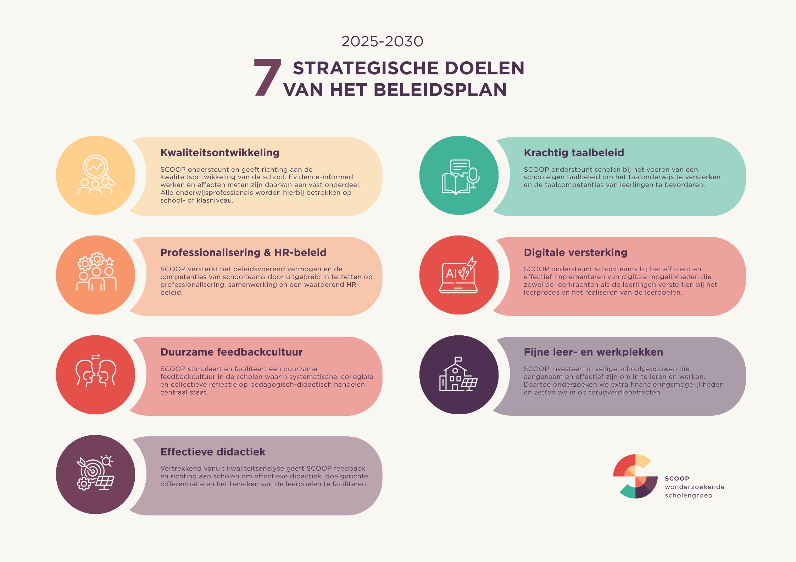
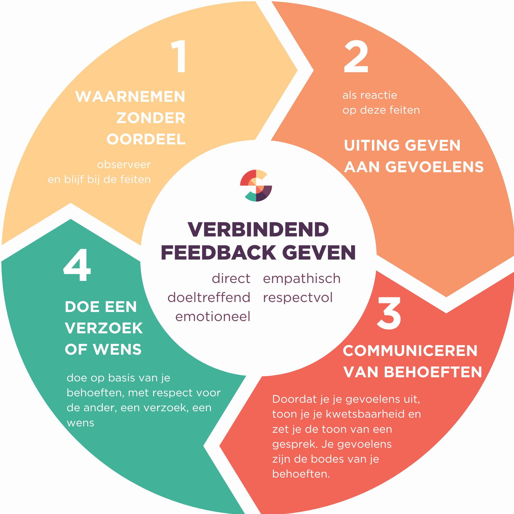
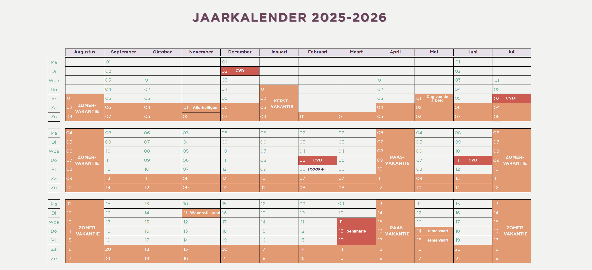
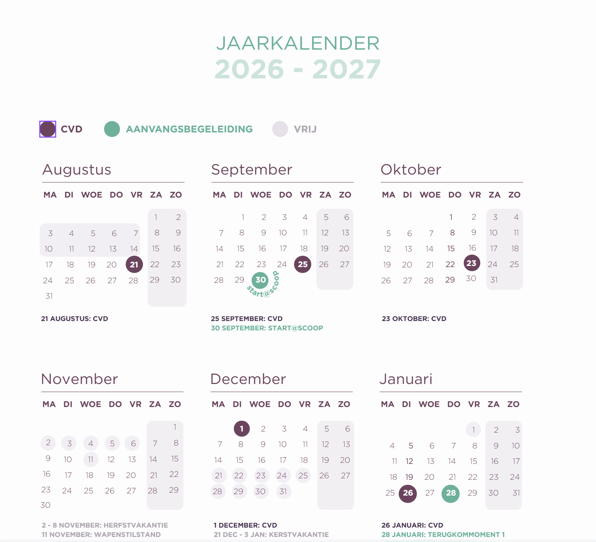

A set of infographics for SCOOP, built on its visual identity. The circle at the heart of the feedback infographic captures the cyclical nature of feedback and echoes the SCOOP logo. I carried that circle into the vision poster too, pairing it with icons from existing SCOOP materials, and kept the focus on a clear and easy-to-read layout.


A redesign of SCOOP’s annual calendar for 2026–2027. The previous edition felt cluttered, with the holidays stealing the spotlight. Staying true to SCOOP’s visual identity, I gave the grid more breathing room so the dates that really matter, like meetings and conferences, get the attention they deserve.


Made with
Made by
- Tina Boeykens
- Design